week9 additional notes#
LDA#
Linear Discriminant Analsys (LDA) is like PCA, but it focuses on maximzing the seperatibility among known categories.
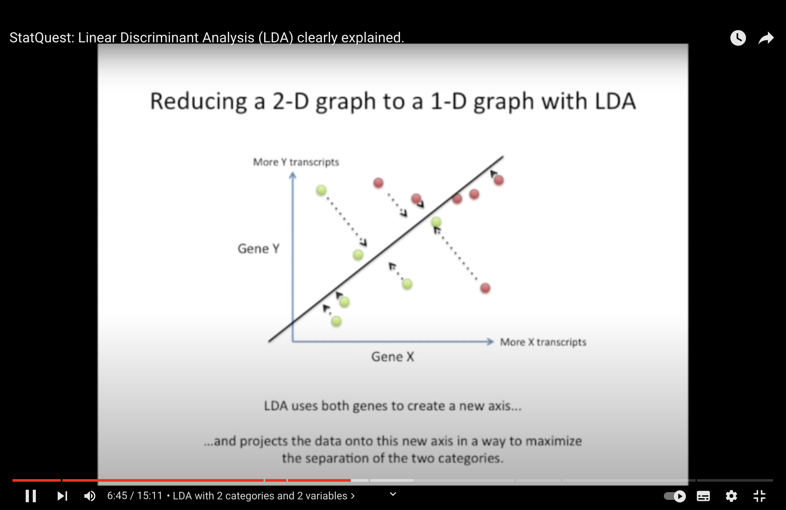 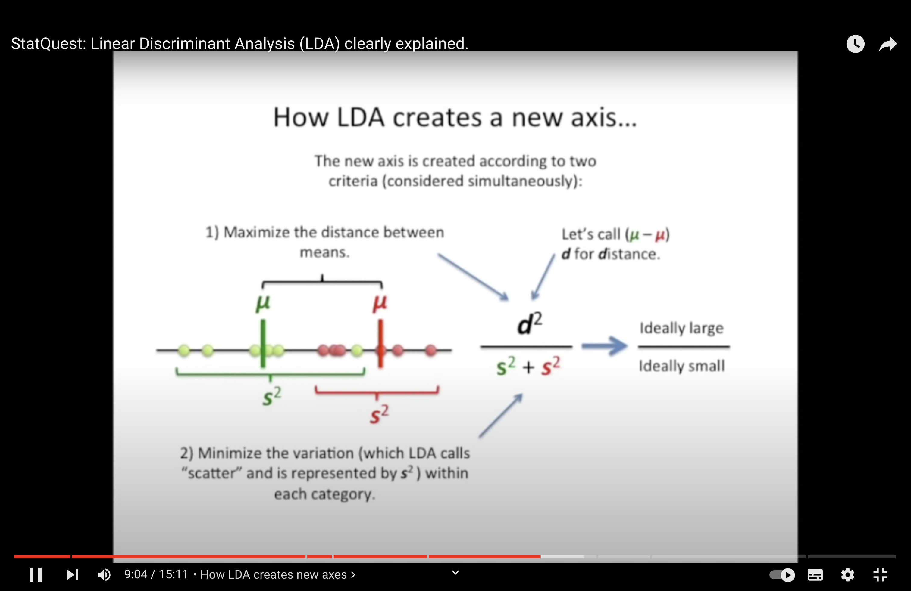 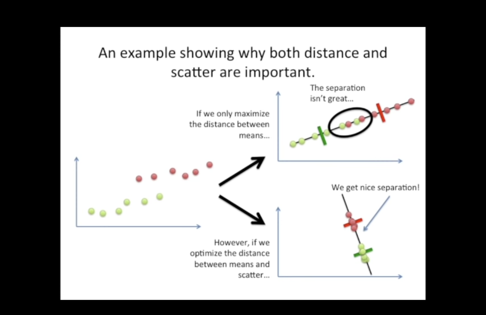 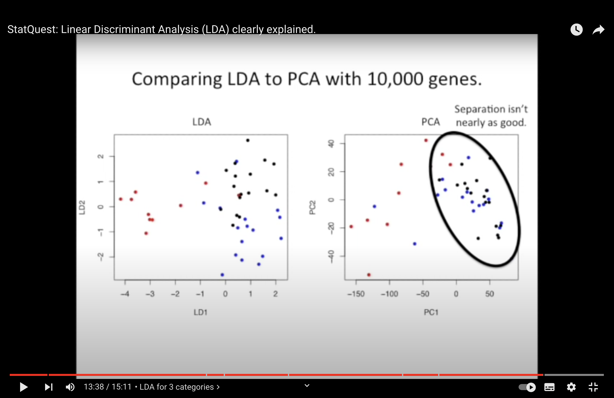{kind=link}
{kind=link}
{kind=link}
{kind=link}
Similarities between PCA (Principal Component Analysis) and LDA (Linear Discriminant Analysis):
Dimensionality Reduction: Both PCA and LDA are techniques used for dimensionality reduction. They transform the original features into a lower-dimensional space.
Linear Transformation: Both methods achieve the reduction by finding new axes (or linear combinations of original features) to project the data onto.
Ordered Axes: As mentioned in your notes:
PCA orders its new axes (principal components) based on the amount of variance they capture from the data, with PC1 capturing the most and subsequent components capturing less.
LDA orders its axes (linear discriminants) based on how well they separate different classes. LD1 separates the classes the most, and subsequent discriminants do so to a lesser degree.
Eigenvectors and Eigenvalues: Both PCA and LDA use eigenvectors and eigenvalues in their calculations. In PCA, they are derived from the data’s covariance matrix. In LDA, they arise from the ratio of between-class to within-class scatter matrices.
Interpretability: In both PCA and LDA, one can investigate which original features (like genes, in a biological context) are most influential in defining the new axes. This helps in understanding the underlying structure and importance of original features.
Visualization: Both PCA and LDA are commonly used for visualization purposes. By reducing the dimensionality to 2 or 3 components/discriminants, data can be visualized in 2D or 3D plots.
Linearity: Both techniques assume linear relationships among features. They work best when this assumption holds.
However, it’s essential to remember the key difference: PCA is unsupervised and focuses on maximizing variance irrespective of class labels, while LDA is supervised and aims to maximize the separability between known classes.
QDA#
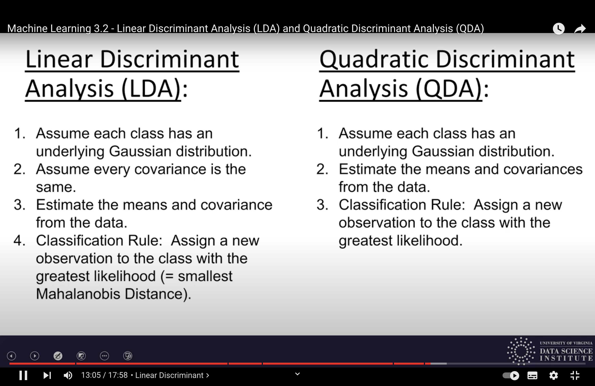 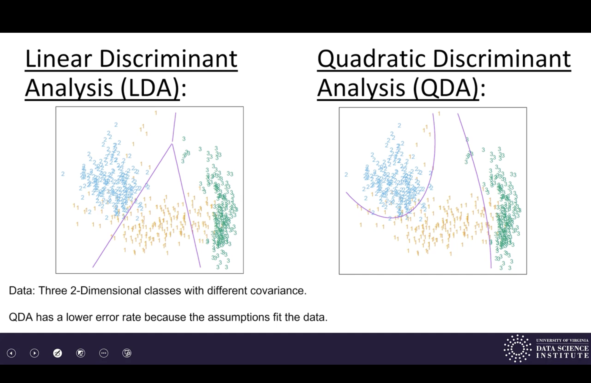{kind=link}
{kind=link}
Review:
LDA and ODA assume distributions are Gaussian, estimate from data, and classify by maximum likelihood.
LDA assumes same Gaussian. (linear decision boundaries)
QDA allows different Gaussians. (quadratic decision boundaries)
Lab#
Your task today will be to apply the linear discriminant analysis (LDA) and quadratic discriminant analysis (QDA) classifiers seen in class to these data:
(1) use the training data to construct the classifier;
(2) apply the classifier to the test data;
(3) Compute the classification error of the classifier on those test data
Random Forest#
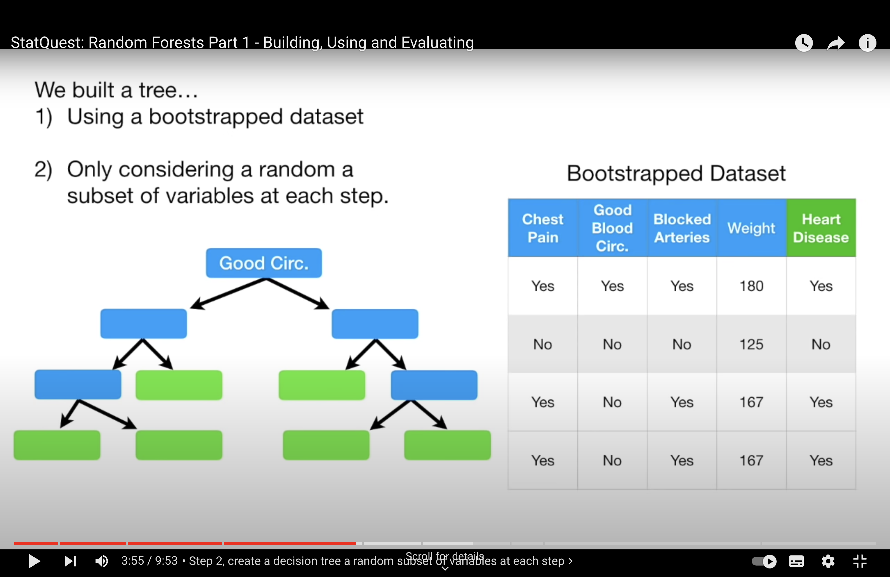 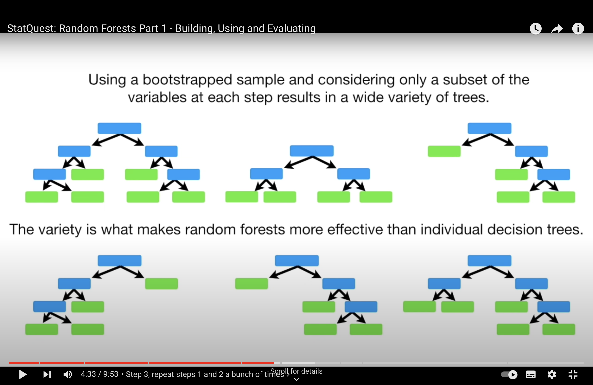 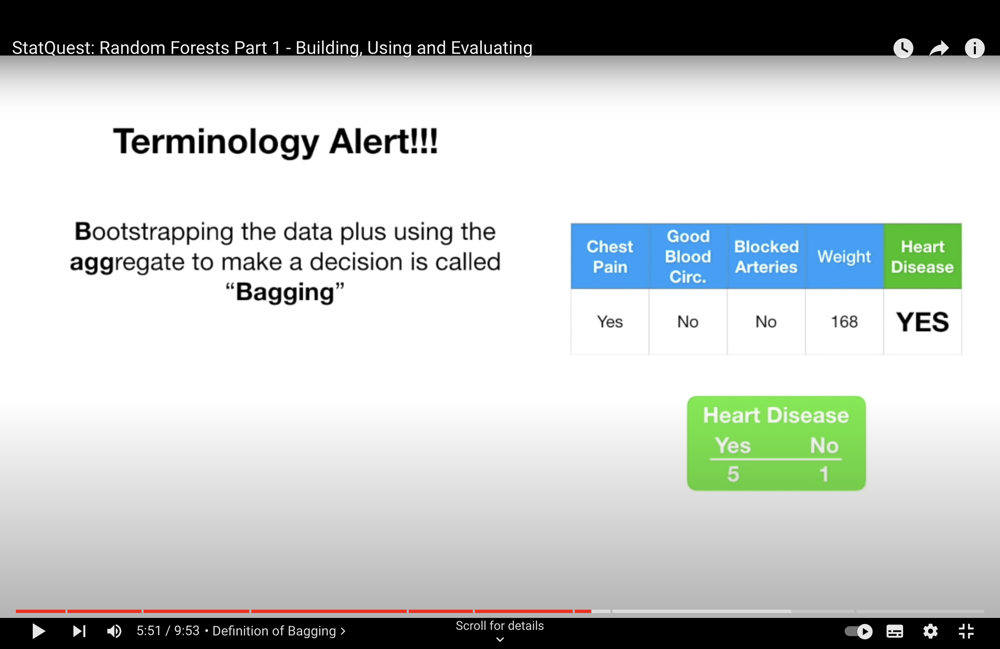 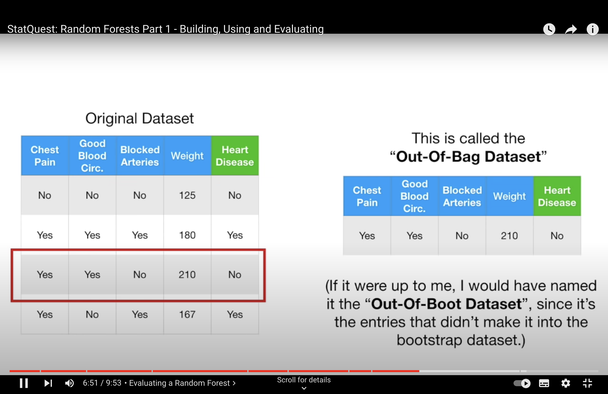{kind=link}
{kind=link}
{kind=link}
{kind=link}
-StatQuest: Random Forests Part 2: Missing data and clustering
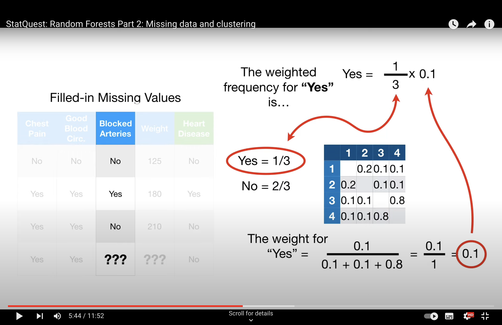 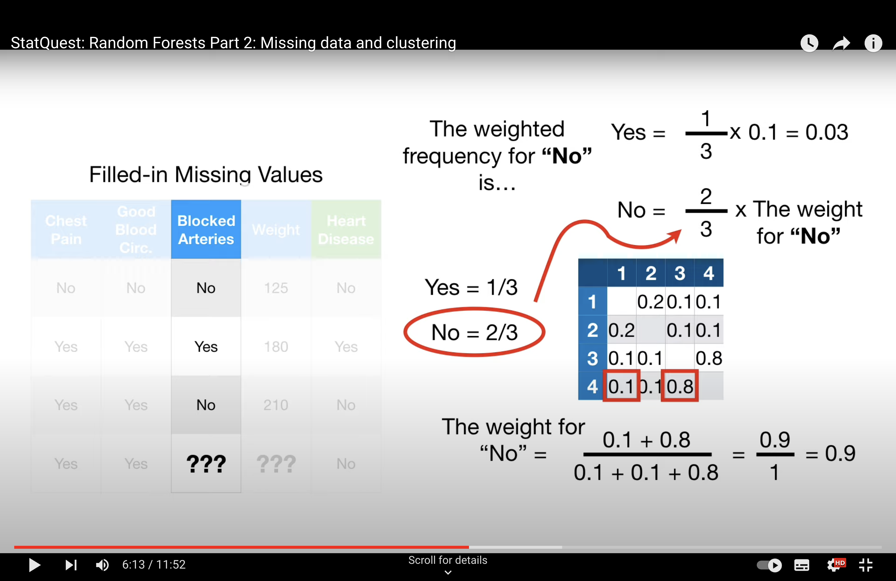 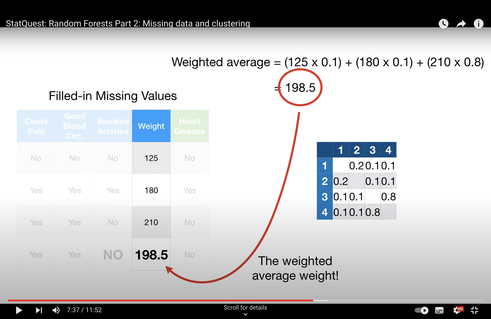 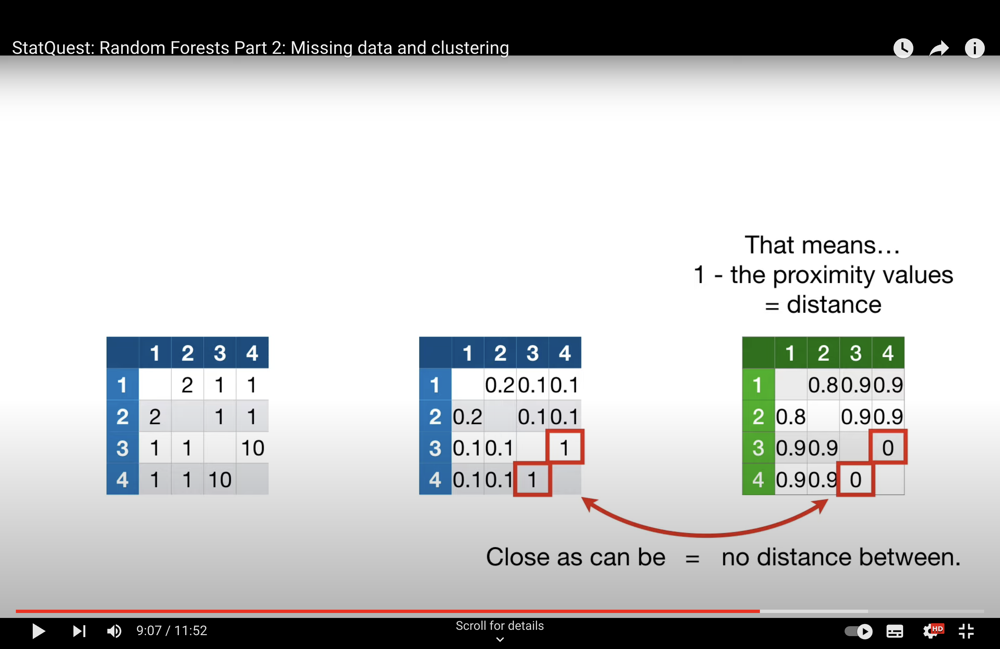{kind=link}
{kind=link}
{kind=link}
{kind=link}
Issue with Tree#
In the context of Random Forests and other ensemble methods like bagging, it’s not primarily the overlap in data points that causes the trees to be dependent, but rather the use of strong predictor features across different trees. Here’s how this works:
Strong Predictors: In a dataset, if there are features (predictors) that are very strong, meaning they have a significant and consistent impact on the dependent variable, these features are likely to be selected for splitting early in the decision trees. In a standard bagging approach, where all features are considered for every split in every tree, these strong predictors dominate the tree-building process. This leads to a situation where many trees in the ensemble might have similar structures, especially near the top of the trees, because they are all using the same strong predictors.
Tree Correlation: When many trees in an ensemble use the same strong predictors for their primary splits, the trees become correlated with each other. In other words, they are likely to make similar predictions because they are structured similarly. This correlation among trees can diminish the effectiveness of the ensemble. The main power of ensemble methods comes from combining predictions from diverse (less correlated) models, as this can lead to a reduction in overall variance and an increase in prediction accuracy.
Random Forest Solution: Random Forests address this issue by introducing randomness in the feature selection process. When building each tree, instead of considering all available features for each split, Random Forests randomly select a subset of features. This means that even if there are strong predictors in the dataset, not every tree in the forest will have a chance to use them at every split. This encourages each tree to explore different paths and leads to a more diverse (less correlated) set of trees in the ensemble.
Outcome: By reducing the correlation among the trees in the ensemble, Random Forests typically provide a more accurate and robust model compared to a standard bagging ensemble of decision trees, especially in cases where the dataset contains one or more strong predictors.
From DT to RF
Decision Trees (DT): In a standard decision tree, when deciding which feature to use for a split at each node, the algorithm considers all available features. It selects the feature and the split-point that best separates the data according to some impurity measure (like Gini impurity for classification tasks). This process continues recursively until the tree reaches a stopping criterion.
Bagging with Decision Trees: When using bagging (Bootstrap Aggregating) with decision trees, multiple trees are created, each trained on a different bootstrap sample of the dataset. However, in standard bagging, each tree still considers all features for splitting at each node. Since they all have access to the same features and use the same criteria for choosing splits, if some features are very strong predictors, they are likely to be chosen in many of the trees, making the structure of these trees similar.
Random Forests and Feature Randomness: The ‘random’ in Random Forest indeed refers to an additional layer of randomness beyond what is used in standard bagging. In Random Forests, when building each tree:
Not only is a bootstrap sample of the data used (as in standard bagging), but also a random subset of features is considered at each split.
This means, for each split in each tree, the algorithm randomly selects a subset of the features and only considers those for splitting.
The default number of features considered at each split is typically the square root of the total number of features (\( p^{1/2} \) for classification tasks). This parameter can be tuned based on the specific dataset and problem.
Effect on Tree Correlation: By introducing this feature randomness, Random Forests ensure that not every tree in the ensemble will use the same strong predictors at every split. This results in a more diverse set of trees, reducing the correlation among them, which is beneficial for the ensemble’s overall predictive performance.